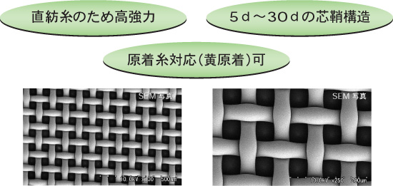
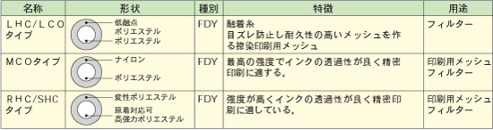

| KBセーレンのモノフィラメントは高い技術により、様々なポリマーの組合せと糸の構造及び高次加工を駆使して、多機能で高品質なバリエーションを揃えております。 中でも当社の独自技術である細繊度技術による細さへの探求と、コンジュゲート技術を駆使することによる高機能高付加価値の追求から産まれた芯鞘構造のコンジュゲートタイプのフィラメントが高い評価を受けています。 |
 |
 |
| ■フィルターメッシュ ■スクリーン ■ブラシ |
| ●問い合わせ先● |
| ＫＢセーレン株式会社 |
| kbs.info@kb.seiren.com |